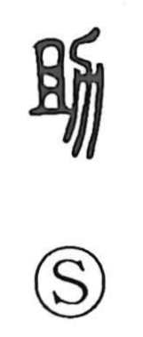

助

Kun: tasukeru, tasukaru, suke | On: jo
to help ・ to aid ・ assistance
Explanation
Shirakawa interprets 助 as a compound that brings together 且 and 力. In early forms, 且 depicts a zhu/suki—a spade used for cutting grass—while 力 represents an early plough (erui/suki) for turning and cultivating the soil. One tool clears the growth, the other breaks the earth; used together, they make fieldwork possible. From this image of tools working in concert, the character took on the sense of helping or giving support, later broadening from agricultural cooperation to aiding people in general.